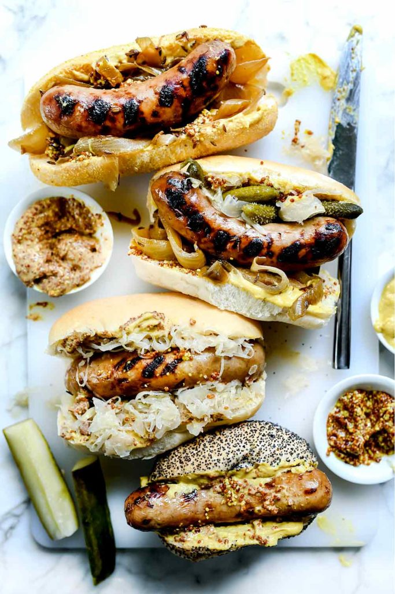

Bratwurst

Description
It's summer, and that means grilling! This recipe and image was taken from foodiecrush.com
Ingredients
- 2 tablespoons butter
- 1 1/2 yellow onions, sliced
- 1 tablespoon caraway seeds
- 1/2 teaspoon kosher salt
- 6 bratwurst sausages
- 1 12-ounce bottle amber ale or nut brown ale
- 6 buns
Steps
- In a cast iron or heavy botttomed skillet, melt the butter over medium high heat. Add the onion and caraway seeds and cook for 5 minutes or until the onions begin to soften. Season with kosher salt. Nestle the bratwurst in the onions, add the bottle of ale and bring to a low boil. Reduce the heat to a simmer and cook for 30-40 minutes, turning the brats occasionally.
- Tofinishthe bratwurst on the stove, transfer the onions and beer broth to a bowl and set aside. Add the brats back to the skillet and increase the heat to medium high. Brown the sausages evenly on all sides, adding a little more butter or oil if needed. Add the onions and beer broth back to the skillet and keep warm.
- To finish the bratwurst on the grill, preheat the grill to medium-high heat. Cook the bratwurst sausages on the grill for 2-4 minutes per side or until browned on all sides. Ad back to skillet with the onions and bee and keep warm.
- Serve on warm buns with onions and coarse, grainy mustard. Add sauerkraut if desired.